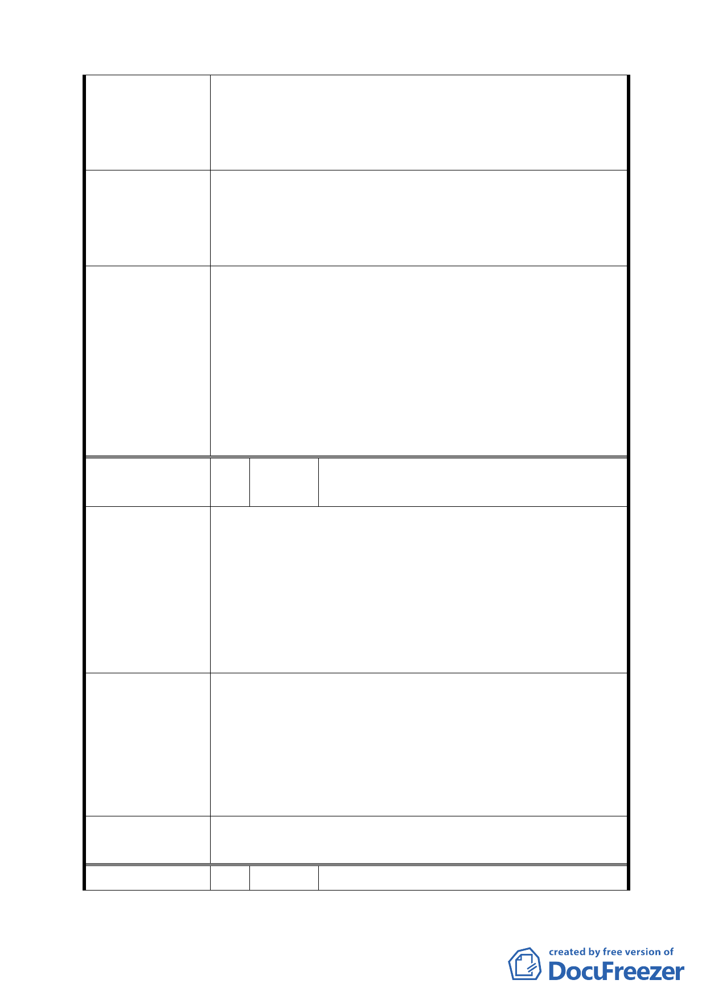

建議辦法
委員會決議
編號
陳情理由
建議辦法
委員會決議
編號
上課，不便且交通安全堪慮。
三、培英市場原用地緊鄰學校操場及社區公園，是興建
學校多功能活動中心及供社會場地開放使用的首選
用地。
一、家長會應學生家長一致的需求及社區說明會意見及
社區說明會意見，建請該地興建綜合活動中心。
二、以改善永安國小教學活動空間不足的需求及社區居
民場地開放資源共享的期待。
中山區培英市場同意由原市場用地變更為機關用地。為
避免民眾疑慮並符合其未來使用與開發計畫之彈性，刪
除主辦單位社會局之文字改為臺北市政府，併同刪除計
畫書第 14 頁、第 15 頁變更理由與土地使用分區管制內
「提供身心障礙者長期照顧及住宿服務，以及供公務機
關辦公場所使用」之文字。至於日後機關用地之興闢，
其開發計畫請臺北市政府需求機關考量地區民意需求妥
予規劃設計。
春之森綠榕區主任委員陳本桂(內湖區湖
5 陳情人 洲市場)
一、該市場周邊住宅用地及學校已 90%以上開發完成，並
大多進駐，週遭 1000 公尺方圓內欠缺市場機能。
二、原四期重劃時即經專業規劃該地號屬市場用地。
三、麗湖國小停車場已建設完成，惟停用效率不高。但
對市場使用卻極有加分效果。
四、改為公園規模很小，僅能圖利緊鄰四周之居民，對
區域內大多數住民並無效益。
一、維持原市場規劃。
二、市場與活動中心(市場可限制用途外租給如超市等)
聯合開發。
三、里民活動中心(收費制之泳池、羽球館…)。
四、堅決反對改為公園(附近已有麗湖公園、麗湖國小、
國防醫學院及四週自然保護區)。
內湖區湖洲市場與內湖區二期市場同意由原市場用地變
更為公園用地。
6 陳情人 成功康寧社區發展協會(內湖區二期市
- 11 -